7. RHINO Maintenance¶
This section covers common maintenance tasks for the Original VPforce Rhino, including belt re-tightening, re-alignment after belt slip, addressing stick drift when trimming off center, resolving clicking noise during force reversal, and replacing the grip mount head.
Note
These maintenance tasks applies to the Original VPforce Rhino only. The DIY versions of the Rhino may have different maintenance procedures.
7.1 Re-tightening the Belts¶
Over time, the drive belts connecting the motors to the pulleys may stretch and lose tension, requiring adjustment. Belt tension is critical for accurate position sensing and preventing slippage. Loose belts can cause position tracking errors, leading to FAULT_UNSTABLE errors or unpredictable stick behavior.
The Rhino’s design makes belt tensioning straightforward: the motor mounting holes are slotted, allowing you to slide the motor to adjust belt tension without removing the belt entirely.
7.1.1 When to Re-tension Belts¶
You should check belt tension if you experience:
FAULT_UNSTABLEerrors during operation- Position tracking drift or inconsistency
- Audible “thump” or sudden force jumps
- Belt visibly loose or sagging
7.1.2 Understanding the Adjustment Mechanism¶
Pitch Axis (Y-axis):
Motor slots are horizontal. Push the motor away from the large gear to increase tension.
Roll Axis (X-axis):
Motor slots are vertical. Push the motor down to increase tension.
Remember
Both axes use the same principle: increase distance between motor pulley and large gear to tighten the belt.
7.1.3 Step-by-Step Belt Tensioning Procedure¶
7.1.3.1 Step 1: Partially Remove the Belt¶
Slide the belt off the large gear only (leave it on the motor pulley). This provides access to the motor mounting bolts while preserving the motor’s calibrated position relative to the belt.
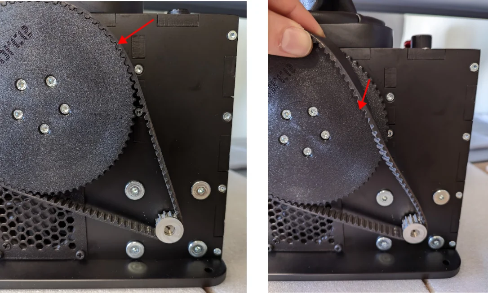
Important
Do NOT remove the belt completely from both pulleys. Keeping it on the motor pulley maintains approximate calibration alignment and makes reinstallation easier.
7.1.3.2 Step 2: Loosen the Motor Mounting Bolts¶
Locate the motor mounting bolts (typically two bolts securing the motor to the frame). Loosen these bolts just enough to allow the motor to move freely within the slotted holes.
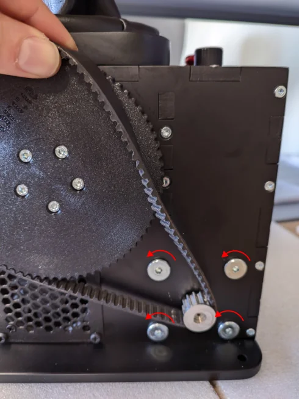
Do not remove the bolts completely - just loosen them enough to allow motor movement.
7.1.3.3 Step 3: Adjust Motor Position to Increase Tension¶
Gently push the motor to increase the distance between the motor pulley and the large gear:
- Pitch axis (Y): Push motor horizontally away from large gear
- Roll axis (X): Push motor downward (vertically)
A small adjustment of approximately 0.5 mm is typically sufficient. You’re not trying to make the belt guitar-string tight - just firm.
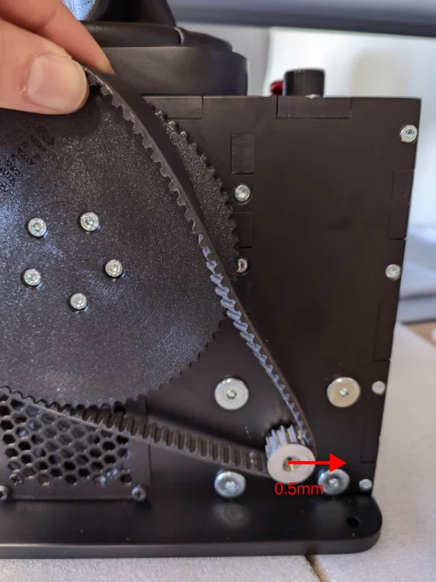
7.1.3.4 Step 4: Secure and Test Tension¶
Option A: Quick Check (Recommended for First Attempt)
- Tighten one bolt finger-tight to hold motor position
-
Test belt tension by pressing on the belt between pulleys:
- Should have slight give but feel firm
- Should not sag or be excessively loose
- Should not be so tight it’s difficult to deflect
-
If tension feels correct, tighten the second bolt
- If tension is incorrect, loosen bolt and repeat Step 3
Option B: Secure Both Bolts
- Tighten both bolts while holding motor in position
- Test belt tension after tightening
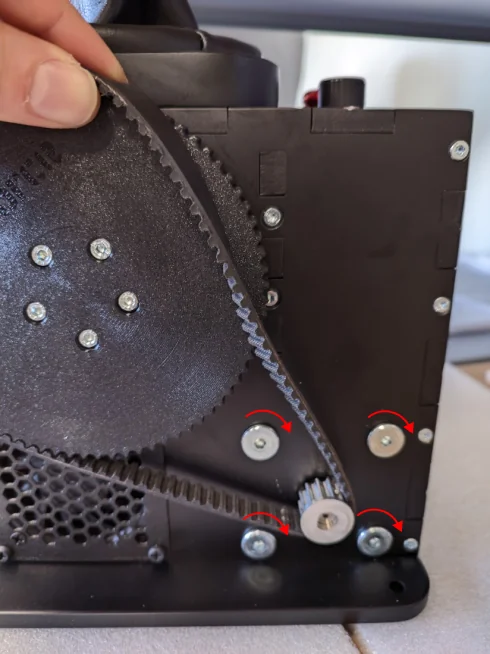
7.1.3.5 Step 5: Reinstall the Belt¶
With the motor bolts secured, slide the belt back onto the large gear.
If the belt won’t slip on easily:
- Slightly loosen the motor bolts
- Move the motor fractionally closer to the large gear (reduce tension slightly)
- Reinstall the belt
- Re-tighten bolts
- Re-check tension
The belt should slide onto the gear with moderate resistance - not so tight you have to force it, but not so loose it falls on by itself.
7.1.3.6 Step 6: Run Auto Calibration¶
After belt tensioning:
- Open VPforce Configurator
- Navigate to FFB Axes Setup tab
- Click Auto Calibrate
- Move stick through full range of motion in all directions
- Click Auto Calibrate again to deactivate
- Click Apply Settings to activate the calibration
- Click Store Settings if you want to save it permanently
Verify calibration values are approximately C:~2000 for both axes.
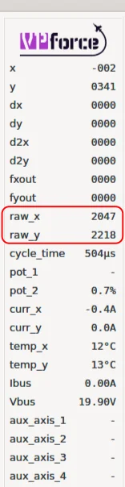
7.1.4 Re-alignment After Complete Belt Slip or Belt Removal¶
If the belt has slipped off both pulleys completely, or you have removed the belt(s) for any other reason, the motor position relative to the stick position must be realigned before reinstalling the belt. This is critical because the motor’s absolute position encoder needs to match the physical stick position.
7.1.4.1 Method 1: Manual Realignment (More Control)¶
- Start with belt(s) removed
- Open VPforce Configurator → Settings tab
- Set the Spring gain slider to %0, “Apply Settings”
- Manually rotate the motor pulley (by hand) while watching the raw axis value (raw_x or raw_y) in the real-time information panel
- Rotate until raw value reads between 2000-2100
- Manually center the stick gimbal physically
- Reinstall the belt on the pulley(s) without changing the position of the motor
- Set the Spring gain slider back to previous value, “Apply Settings”
- Run Auto Calibration
- “Store Settings” to save the calibration values permanently. If you have multiple configurator profiles and if the previous calibration values are saved with them, you will either need to recreate them, or load the profiles individually, perform the recalibration and then save the profile off again.
7.1.4.2 Method 2: Automatic Motor Recentering (Easier but Less Precise)¶
- Start with belt(s) removed
- Open VPforce Configurator → FFB Axes Setup tab (bottom of the screen)
-
Manually set the calibration values for whichever axes you are working with:
- Min: 0
- Max: 4096
-
Click Apply Settings
- Navigate to Effects tab
- Enable Spring effect with moderate gain (~50%)
- Navigate to Settings tab
- Set the Spring gain slider to %100
- Click Apply Settings
- The motor will automatically rotate to center position (2048)
- Manually center the stick gimbal physically to match
- Reinstall the belt on both pulleys
- Run Auto Calibration to restore proper calibration
- “Store Settings” to save the calibration values permanently. If you have multiple configurator profiles and if the previous calibration values are saved with them, you will either need to recreate them, or load the profiles individually, perform the recalibration and then save the profile off again.
Verification
After realignment and calibration, the final calibrated center value should read approximately C:~2000. Values significantly outside this range (below 1900 or above 2200) indicate misalignment.
7.1.5 Troubleshooting Belt Tension Issues¶
Belt too loose after adjustment:
- Increase motor adjustment distance (push motor further away from large gear)
- Check if belt has stretched significantly and may need replacement
Belt too tight (won’t reinstall or feels guitar-string tight):
- Reduce motor adjustment distance slightly
- Belt should be firm but not excessively tight
Position tracking still inaccurate after tensioning:
- Verify calibration values are approximately C:~2000
- Check for belt damage or wear
- Ensure belt is properly seated on both pulleys (not riding on pulley edges)
7.2 Stick drifts when trimming off center¶
See section 3.4 Balancing the Grip
7.3 Clicking Noise During Force Reversal¶
If you notice a clicking sound or slight looseness when the force direction reverses, it may be due to mechanical play or backlash in the VPforce Rhino hardware. This is often caused by slight movement between components when force is applied in opposite directions. Common reasons include slightly loose joints.
Below are typical sources of backlash, listed in order of how easy they are to check and adjust:
- Small 12T Pulley on the Motor Shaft
Most common cause of noise due to micro-slippage on the shaft.
- This pulley is secured by three M3 grub screws (2 mm hex) spaced 120° apart. If these are not tightened firmly, the pulley may slip slightly under load changes, causing a click or knock.
- Use a high-quality 2 mm hex key to avoid stripping the screw heads.
- Apply firm torque and ensure all three screws are tightened evenly.
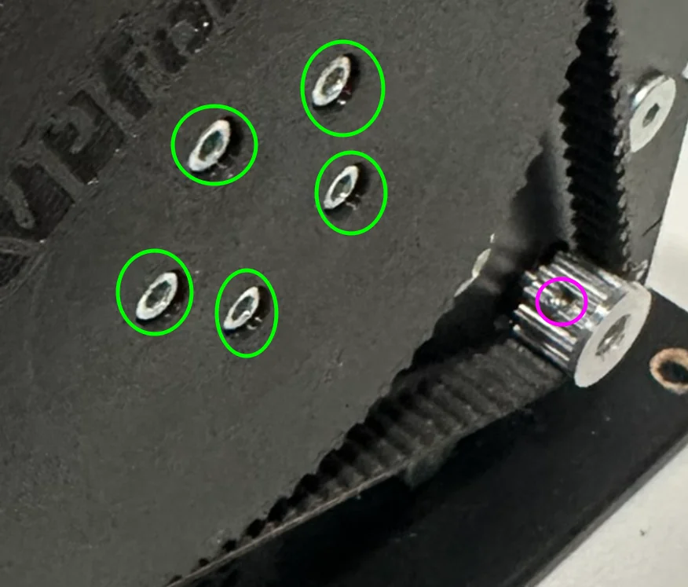
-
HEX Bolts on the Large Gears Rare source of noise, but very easy to check.
- Each large gear (on both axes) is fastened with five M4 HEX bolts.
- Simply check and tighten these bolts. Even if they are not the root cause, this step takes little effort and helps rule them out.
-
Screws on the Aluminum Gimbal Stem Loose stem screws can cause movement or clicking.
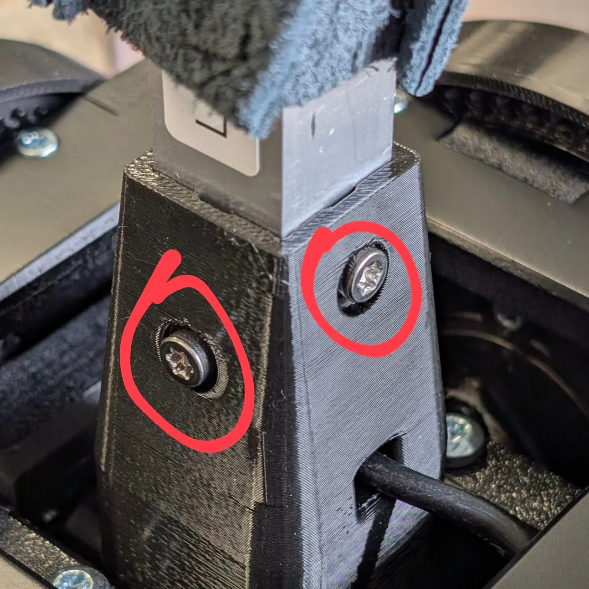
- The aluminum gimbal stem is secured by eight screws on all sides.
- Even slight looseness in these screws can cause a click when force is applied or reversed.
- Check and tighten all eight screws (typically PH2 or TX20 depending on the unit version).
- Axis Coupling in the Center of the Gimbal (X and Y Axes)
- A slightly loose coupling here can cause a “clunk” sound during reversal.
- The X and Y axes are joined via a central bolt that passes through the gimbal and clamps the axes via bearings. If this bolt/nut assembly becomes even slightly loose, the nut may shift slightly under force over the bearing, producing a “clunk”.
Note
For the Y axis, everything is the same except this axis coupling nut does not affect it — force is transferred directly into the gimbal stem, bypassing this joint.
How to access and tighten (relevant to X axis):
- Lift the leather cover — do not cut the zip tie.
- Remove the grip connector by unscrewing the two PH1 screws, pulling out and disconnecting the grip connector. Insert a tool into a screw hole to aid in pulling the socket out. Simultaneously, push the cable under the leather into the stem. This will help lift the socket out.
Handle with Care
When unplugging the connector from the socket, be extremely careful. It is very easy to accidentally pull the small Molex Picoblade contacts out of the connector housing if you pull on the wires instead of the connector itself.
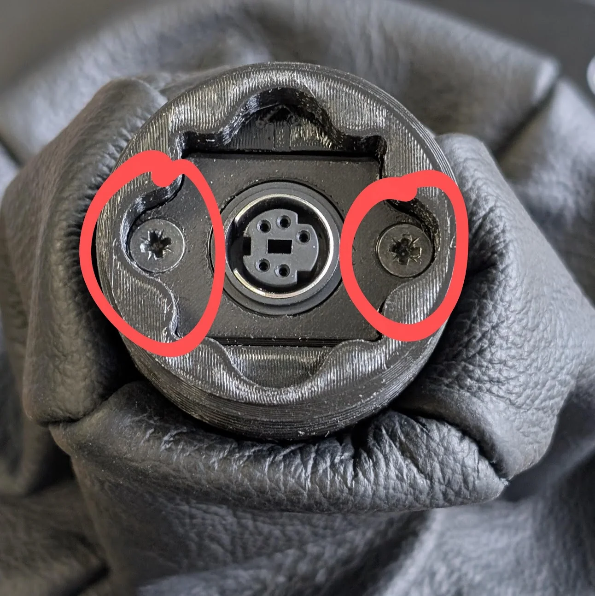
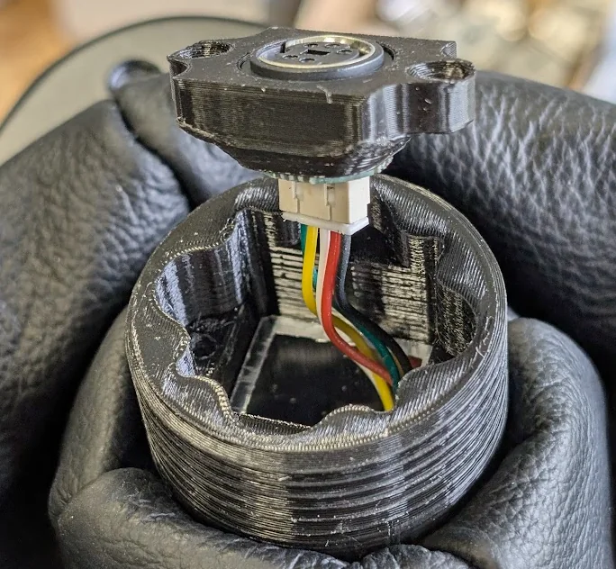
- Detach the gimbal stem:
- On older Rhino units: remove the four PH2 screws from all sides.
- On newer units: remove the four TX20 screws from all sides.
- Pull out the aluminum tube.
- Inside the center of the gimbal you’ll find an M5 nut. Tighten this nut securely using a socket driver from the top.
- In most cases, tightening from the top is enough.
- If the bolt spins freely (i.e., the nut doesn’t tighten), access the bottom of the gimbal:
- Remove the bottom plate of the unit.
- Hold the PH2 bolt head in place with a screwdriver while tightening the nut from the top.
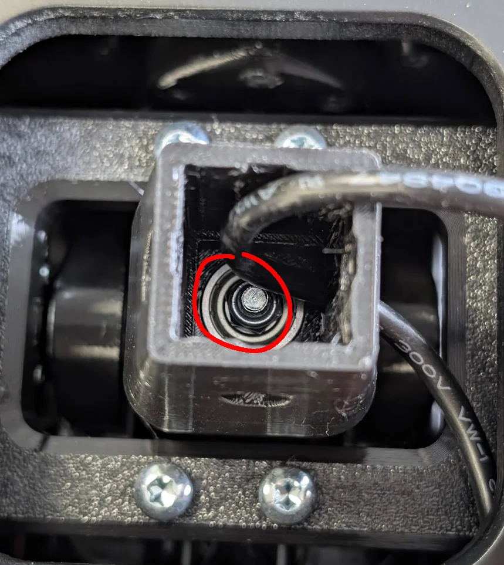
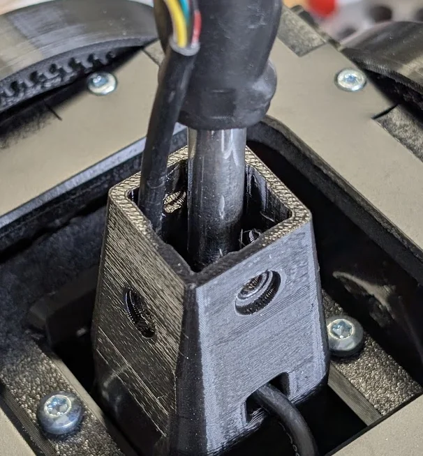
7.4 Replacing the Grip Mount Head¶
The grip mount head is held by four M4 screws and is easy to replace.
Tools required:
- TX20 driver/bit or PH2 (for older units)
- TX10 bit
- PH1 driver/bit
- 1 pc zip tie
Instructions:
-
Remove Dust Boot:
- Remove the 4pcs T10 screws that secure the dust shoe to the base.
- Cut the zip tie that holds the leather in place and then remove the dust boot.
-
Disconnect Grip Connector Socket:
-
Remove the 2 PH1 screws that secure the grip connector socket.
-
Disconnect and remove the socket.
Handle with Care
When unplugging the connector from the socket, be extremely careful. It is very easy to accidentally pull the small Molex Picoblade contacts out of the connector housing if you pull on the wires instead of the connector itself.
-
Remove the 4 T20/PH2 screws holding the grip mount.
-
Take off the old grip mount, making sure to note the orientation of the star pattern for proper reinstallation.
-
-
Install New Grip Mount:
-
Place the aluminum grip mount in the correct orientation.
-
Reassemble by screwing all components back in the reverse order.
-
7.5 Tightening the Power button (E-Stop)¶
With regular use, the power button (E-Stop) may gradually loosen from its mounting position. If you notice the button becoming wobbly or loose to the touch, it can be easily secured by tightening the retaining nut from inside the unit. This simple maintenance procedure requires only basic tools and takes just a few minutes to complete. Follow the steps below to restore the power button to its proper, secure position.
Step 1: Power off the unit and disconnect all cables. Open the rear panel by removing the Torx screws securing it in place. Set the screws aside in a safe location.
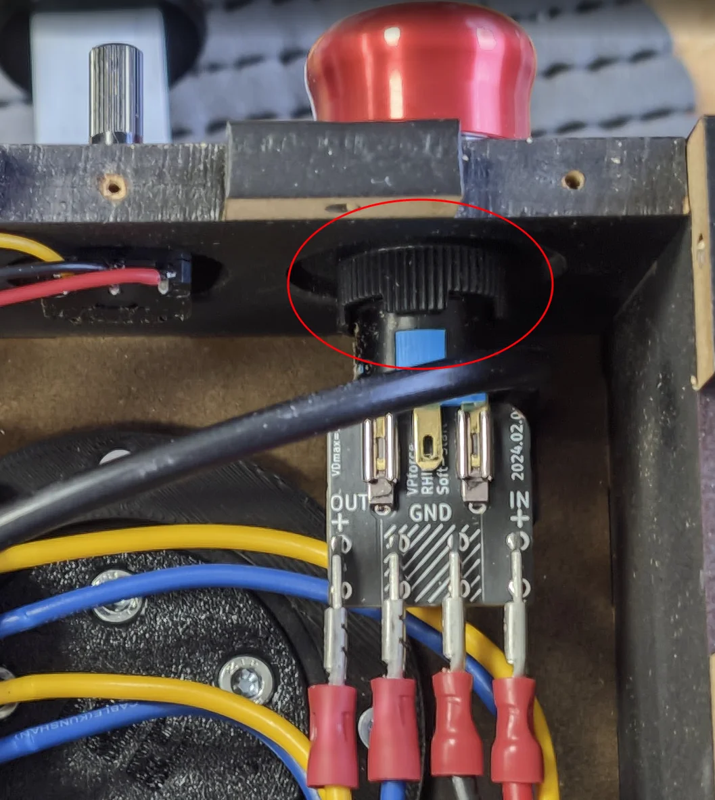
Step 2: Locate the power button (E-Stop) switch from inside the unit. You will see a plastic retaining nut on the threaded shaft of the switch.
Step 3: Hold the power button firmly from the outside to prevent it from rotating. Using your fingers or a suitable tool, tighten the plastic nut clockwise until the switch is snug against the panel. Do not overtighten, as this may damage the plastic threads.
Step 4: Verify the button feels secure and sits flush against the panel. Replace the rear panel and secure it with the Torx screws, don’t overtighten - very little torque is required.
Step 5: Reconnect all cables and test the power button to ensure it functions correctly.
7.6 Installing RHINO Throw Limiter¶
The RHINO has a significant amount of throw — 22 degrees — and a long shaft compared to most comparable controllers. The long throw does help with accuracy, but especially with extensions the wide movement range can become excessive. It is possible to set limiters in software, but depending on how much force you are using in general, the software limiter may not feel strong enough. The physical throw limiter adapters offer a simple to install alternative solution that sets hard physical limits to the stick’s movement.
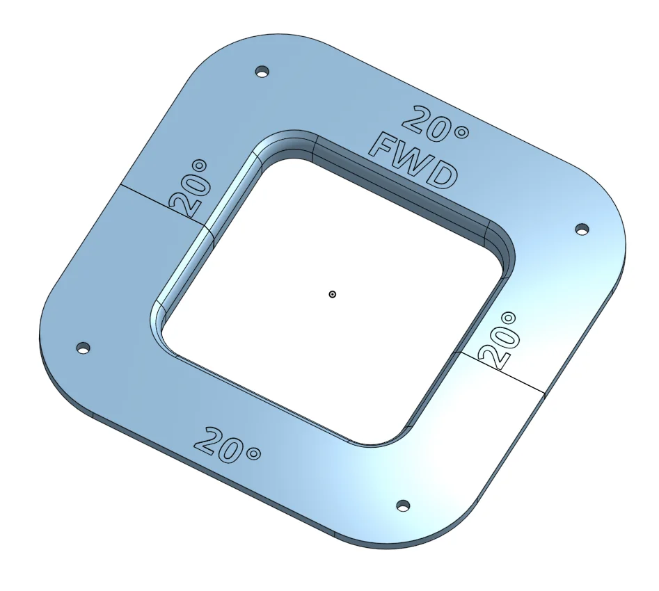
The adapters come in two pieces — front and back. They can be ordered directly from VPforce or 3D printed using the parametric CAD model on Onshape. The Onshape model allows you to parametrically adjust the throw angles to your preference before printing. Limiters may have different movement ranges in different directions depending on the configuration chosen. To install the adapter plates,
-
Unscrew the four Torx T5 screws that connect the dust cover at the base of the stick shaft to the RHINO base and lift the cover slightly - you don’t need to remove it completely. With the cover out of the way, you should now be able to see the opening the stick shaft goes through and the top of the gimbal assembly inside the base.
-
Insert the two limiter plates in the stick shaft opening. Text side is up and FWD is forwards. When installed correctly, the plates should fit snugly in the opening and stay firmly in place.
-
Place the dust cover plate on top of the limiter plates so that the screw holes align and reattach the screws so that they hold the whole shebang in place. There is no need to go full gorilla on the screws, but do note that they are now holding in place not just the dust cover, but also the limiters that make physical and sometimes somewhat forcible contact with the stick shaft.
-
Recalibrate the controller for the new throw ranges.